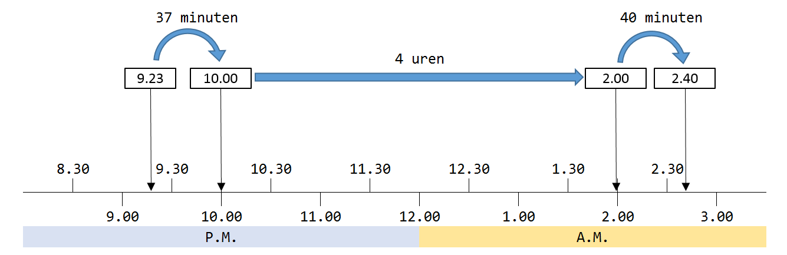
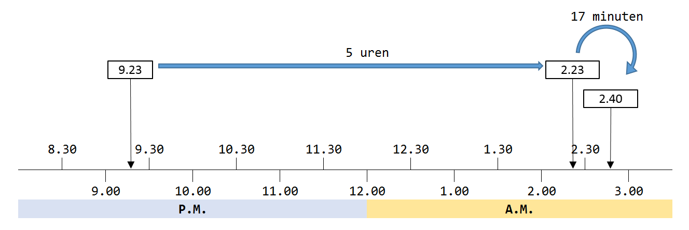

Vraag
Van 9:23 uur p.m. tot 2:40 am is?
A: 5 uren en 17 minuten
B: 5 uren en 7 minuten
C: 6 uren en 3 minuten
D: 6 uren en 43 minuten
Achtergrond Informatie
Een volle dag bestaat uit 24 uren. De eerste helft noemen we "a.m." De tweede helft noemen we "p.m."

- a.m. = akelige morgen
- p.m. = prettige middag
Verder moet je weten dat een uur bestaat uit 60 minuten.
Bijvoorbeeld, van 2:45 p.m tot 3:00 p.m. is dus 15 minuten.
Oplossing
De vraag is: hoeveel uren en minuten is het van 9:23 uur p.m. ('s avonds) tot 2.40 a.m. (heel vroeg in de ochtend)?
Er zijn verschillende manieren om dit op te lossen.
Methode 1
Eén manier om het antwoord te vinden is door de som in kleine stapjes te verdelen:
van 9:23 p.m. tot 10:00 p.m. is 37 minuten (want 60 - 23 = 37)
van 10:00 p.m. tot 2:00 p.m is 4 uren
van 2:00 a.m. tot 2:40 a.m. is 40 minuten

Samen is het dus 4 uur en 77 minuten.
77 minuten is gelijk aan 1 uur en 17 minuten (want een uur is 60 minuten).
Het antwoord is dus 5 uur en 17 minuten, antwoord A
Methode 2
Een andere manier is om eerst de uren en daarna de minuten uit te rekenen.
Van 9:23 a.m. tot 2:23 p.m. is 5 uren.
Van 2:23 p.m. tot 2:40 p.m. = 17 minuten (want 40 - 23 = 17)

Samen is het dus 5 uur en 17 minuten, antwoord A